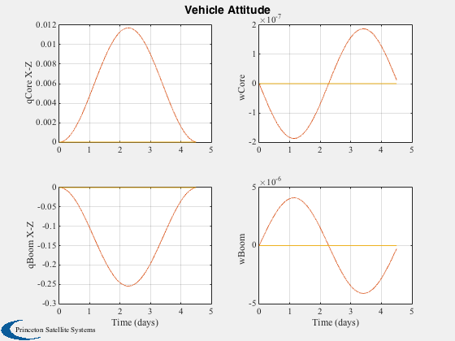
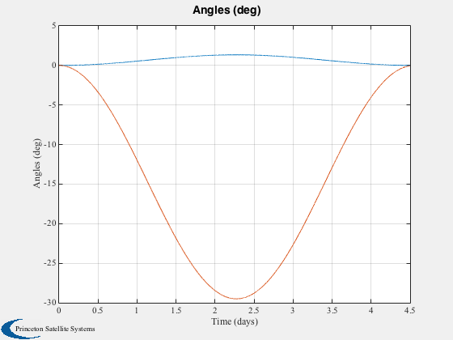

Demonstrate boom dynamics and control using TBModel/FTB functions.
Input a sinusoidal hinge torque and verify resulting motion in absence of external forces and torques.
Runs for 4.5 days at 30 second timestep.
Since version 7. ------------------------------------------------------------------------ xDot = FTB( x, t, r0, r1, lam1, iner0, iner1, m0, m1, torque, force, iAxis ) [wDot, h, iner] = TBModel( w0, w1, q0to1, r0, r1, lam1, iner0, iner1, m0, m1, torque, force, iAxis ) ------------------------------------------------------------------------ See also FTB, TBModel., QZero, Plot2D, TimeGUI, TimeLabl, RK4 ------------------------------------------------------------------------
Contents
%------------------------------------------------------------------------------- % Copyright (c) 2006 Princeton Satellite Systems, Inc. % All rights reserved. %-------------------------------------------------------------------------------
Specify mass properties.
%-------------------------
r0 = [0;0;0];
r1 = [0;0;0];
lam1 = [20;0;0];
iner0 = 1e6 * [2 0 0; 0 1 0; 0 0 1];
iner1 = [25 0 0; 0 900 0; 0 0 900];
m0 = 250;
m1 = 220;
iAxis = [1 2 3];
simulation time step
%---------------------
dT = 30;
State - [q0;q1;w0;w1]
%----------------------
x = [QZero;QZero;[0;0;0];[0;0;0]];
Preallocate arrays
%-------------------
nP = 4.5*86400/dT;
xPlot = zeros(14,nP);
tPlot = dT*[0:nP-1];
tqPlot = zeros(3,nP);
cmPlot = zeros(2,nP);
t = 0;
Initialize the time display
%---------------------------- [ ratioRealTime, tToGoMem ] = TimeGUI( nP ); for k = 1:nP % Rename variables for clarity %----------------------------- qCore = x(1:4); qBoom = x(5:8); wCore = x(9:11); wBoom = x(12:14); % External force and torque %-------------------------- tExt = [0;0;0]; F = [0;0;0]; % Hinge torque on boom %--------------------- tH = 3e-6*[0;cos(1.6e-5*t);0]; % Store data for plotting %------------------------ xPlot(:,k) = x; % Integrate %---------- x = RK4( @FTB, x, dT, t, r0, r1, lam1, iner0, iner1, m0, m1, [tExt;tH], [F;0;0;0], iAxis ); % Display the status message %--------------------------- [ ratioRealTime, tToGoMem ] = TimeGUI( nP, k, tToGoMem, ratioRealTime, dT ); t = t+dT; end TimeGUI( 'close' );
Create plots
%------------- [time,tlab] = TimeLabl( tPlot ); Plot2D(time,xPlot,tlab,{'qCore X-Z','wCore','qBoom X-Z','wBoom'},'Vehicle Attitude',... 'lin',{[2:4] [9:11] [6:8] [12:14]},[],2) Plot2D(time,2*asin(xPlot([3 7],:))*180/pi,tlab,'Angles (deg)') %-------------------------------------- % PSS internal file version information %-------------------------------------- 